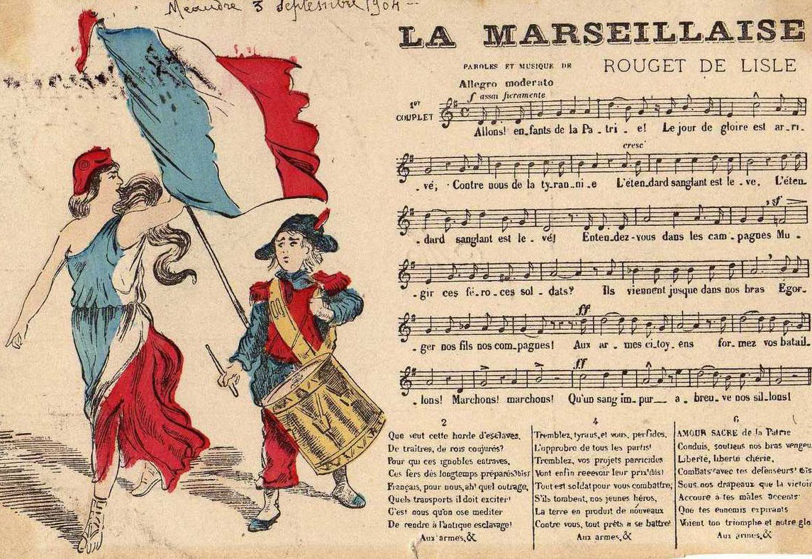

L'Histoire de Marseille
Marseille est un des berceaux de la Méditerranée, ville antique, rebelle et pleine d'Histoire.
En quelques dates, découvrez l'Histoire d'une ville Antique devenue capitale européenne de la culture en 2013.
Dès le paléolithique, les premières traces d’occupation humaine sont attestées dans les calanques marseillaises,
au niveau de la grotte Cosquer dont les exceptionnelles peintures rupestres sont datées de 27 000 ans av. J.-C.
La fondation de Marseille, à proprement parler, est un peu plus «récente», bien qu’elle remonte au VIe siècle av. J.-C.
Ce qui en fait la doyenne des villes françaises.
-600 av J-C
Fondation de Massalia
C’est aux environs de 600 avant JC que l’on estime la fondation de la ville par des colons grecs.
Ces derniers, grands navigateurs, ont traversé la Méditerranée depuis la cité de Phocée (actuelle Turquie),
et ont dû trouver dans la rade de l’actuel Vieux Port un lieu particulièrement adéquat pour leur installation.
Les Phocéens ont eu du flair, et Massalia se développa à grands pas durant l’Antiquité,
pour devenir une puissance commerciale importante et indépendante dans le bassin méditerranéen.
Marseille est le plus ancienne ville de France.
La légende de Gyptis et Protis est le mythe fondateur qui raconte la fondation légendaire de Marseille (Massalia)
par les Phocéens.
Une histoire que l’on trouve dans deux versions.
Si ces dernières présentent quelques différences,
elles racontent toutes deux le mariage de Gyptis, fille du chef des autochtones, avec Protis,
marin originaire de Phocée. Lors de ses noces, la princesse choisit alors d’épouser l’étranger en
lui présentant une coupe emplie d’eau au cours d’un repas.

Par cette implantation, Massalia contribue à introduire en Gaule la culture de la vigne et de l’olivier,
la monnaie et l’écriture. Elle s’impose d’ailleurs rapidement comme une place d’échanges influente entre l’espace méditerranéen
et le monde celtique.
-49 av J-C
Marseille sous l'Empire Romain
Massalia et Rome furent de proches alliés durant plusieurs siècles, les premiers demandant régulièrement
l’aide des seconds lorsqu’ils se sentaient menacés par les tribus gauloises notamment.
Mais à la suite de divers événements, Massalia est finalement intégrée à l’Empire romain en 49 av JC
après que Jules César eut soumis la cité. Agora, forum, théâtre, thermes sur le Vieux Port,
la ville profite de grands chantiers typiques des cités romaines.
Retrouvez en les vestiges au
Musée d'Histoire de Marseille, situé sur un site archéologique.
Sous la domination romaine, la cité de Massalia continue de prospérer et de se développer durant l'Antiquité.
Cependant, à partir de la fin du Ve siècle, Marseille est un des théâtres des « invasions barbares »
qui secouent l'ensemble de l'Empire romain d'Occident. Occupée par les Ostrogoth puis les mérovingiens, la ville
est pillée lors de la prise en main de la Provence par Charles Martel.
Avec la fondation de l’abbaye de Saint-Victor par Jean Cassien, au Ve siècle, Marseille étend son rayonnement spirituel bien au-delà de la Provence.
L’antiquité tardive constitue un nouvel âge d’or pour la ville.
1000
Marseille au coeur des Croisades
De par sa situation stratégique, Marseille gagna en importance durant le Moyen-Âge comme point de départ pour
les Croisades. La présence de Marseillais est ainsi attestée à Saint-Jean-d'Acre, en Terre Sainte. Le port voit arriver de
nombreuses marchandises venues d’Orient et d’Afrique du Nord, le commerce de la ville est alors florissant :
Marseille cultive alors son indépendance, vis-à-vis de la Provence dans un premier temps, puis de la France,
jusqu’à la fin du XVe siècle.
1347
La Peste Noire
Il est attesté que la Peste noire est arrivée en France en 1347 via le Vieux Port de Marseille. Le virus, originaire d’Asie, a fait un long voyage
en navire marchand, depuis la Crimée jusqu’à Marseille, en passant par Constantinople, Gênes, etc…
Ce jour-là, un navire génois accoste dans la ville, en provenance de Caffa, sur la mer Noire,
où les Génois se sont établis depuis la fin du XIIIe siècle. Or depuis 1346, les Mongols assiègent Caffa et ont mis au point
une arme redoutable qui annonce les futures guerres bactériologiques.
Pour infecter les assiégés, ils envoyaient par-dessus les murailles de la ville les cadavres de leurs propres soldats morts de la peste.
Les navires génois qui réussissent à fuir Caffa emportent avec eux le terrible bacille, qu'ils vont répandre dans tous les ports
où ils font halte : Constantinople en juillet 1347, Messine en septembre et enfin Marseille en novembre.
Une galère porteuse de peste arrive donc à Marseille, ouvrant ainsi la voie à la plus mortelle épidémie qu'ait jamais connue l'Occident.
16.000 Marseillais seront emportés par la catastrophe.
En 1423, la ville est détruite par les catalans, marquant le début d'un long déclin.
Lorsqu’elle est rattachée à la France, en 1481, Marseille s’impose comme l’une des 1ères villes du royaume par sa population & par son port qui constitue
le principal débouché français sur la Méditerranée. Signe de la vitalité de son négoce, c’est à Marseille qu’est créée la première
Chambre de commerce du pays, en 1599.
1668
Construction du Fort Saint Jean
Rebelle à l’autorité royale, Marseille est soumise en 1660 par les troupes de Louis XIV.
Le Roi Soleil fait construire de part et d’autre de la passe le fort Saint-Jean et la citadelle Saint-Nicolas
dont les canons sont braqués sur la ville. Son autorité affirmée, il initie à partir de 1666 une importante opération d’urbanisme
qui fait sortir Marseille de son rempart médiéval. La superficie de la ville est triplée avec la création du Cours, de l’arsenal des galères,
d’un nouvel Hôtel de Ville, de l’hôpital général de la Charité.
Le Fort Saint-Jean est depuis resté l’un des monuments emblématiques de Marseille.
En 2013, l’édifice est réhabilité pour accueillir le musée des Civilisations de l'Europe et de la Méditerranée
(MUCEM), le grand musée marseillais.
Marseille est transformée en place forte mais retrouvera son prestige au XVIIéme st XVIIIéme siècle grâce
à l'essor du commerce.
La peste de 1720, apportée par le « Grand Saint-Antoine », vient briser cet élan. La moitié de la population marseillaise est alors décimée par l’épidémie.
Mais Marseille va une nouvelle fois rebondir. Elle trouve un nouvel élan économique dans l’ouverture aux mondes océaniques qui permet à ses grands négociants
cultivés de prendre l’ascendant sur la noblesse locale.
1792
La Marseillaise & la Révolution
Depuis le début de son histoire, Marseille a toujours jalousement conservé sa spécificité. Mais la Révolution française est accueillie
les bras ouverts dans la cité phocéenne. L’hymne de la Révolution sera même baptisé Marseillaise !
Ce chant né dans un petit appartement strasbourgeois se retrouve du côté de Montpellier, puis de… Marseille !
Le chant est récupéré par les volontaires marseillais qui s’apprêtent à rallier Paris pour prêter main-forte aux révolutionnaires parisiens :
c’est ainsi qu’ils entonnent, en entrant dans Paris le 30 juillet 1792, cette chanson qu’ils ont rebaptisée « Chant de guerre des armées aux frontières ».

Pour les Parisiens qui entendent cet hymne guerrier pour la première fois, il devient immédiatement l’hymne des Marseillais,
puis la Marseillaise. Quelques jours plus tard, le 10 août 1792, Parisiens et Marseillais s’associaient pour faire tomber les Tuileries,
événement qui marquera la chute de la monarchie constitutionnelle et le début de la première Terreur.
Le Second Empire est une nouvelle période faste pour Marseille. Le port se dote de nouveaux bassins à la Joliette, les lignes ferroviaires et
la gare Saint- Charles révolutionnent les transports. Les industries se développent et les compagnies maritimes accompagnent l’essor de
l’empire colonial. La population est multipliée par 3,5 dans une ville qui connaît une impressionnante mutation urbaine -
percement de la rue de la République et du boulevard Charles Livon, arrivée de l’eau au Palais Longchamp, construction de la préfecture,
du palais du Pharo, de la cathédrale de la Major et de Notre-Dame-de-la-Garde.
1854
Construction de Notre-Dame-de-la-Garde
S’il est un édifice qui symbolise à merveille Marseille, c’est bien Notre Dame de la Garde.
Celle que les Marseillais surnomment affectueusement la Bonne Mère, protectrice des marins marseillais,
trône depuis 1854 sur son promontoire, remplaçant à l’époque une ancienne chapelle.
Avec son style de basilique byzantine et la statue monumentale de la Sainte Vierge qui domine l’ensemble,
Notre Dame de la Garde est depuis indissociable de Marseille. À cheval sur les quartiers du Roucas-Blanc et de Vauban, sur un piton calcaire de 149 m d'altitude
surélevé de 13 m grâce aux murs et soubassements d'un ancien fort.
Construite par l'architecte protestant
Henri-Jacques Espérandieu et consacrée le 5 juin 1864,
elle remplace une chapelle du même nom édifiée en 1214 et reconstruite au XVe siècle.
Bâtie sur les bases d'un fort du XVIe siècle construit par François Ier en 1536,
elle comporte 2 parties : une crypte, creusée dans le roc et de style roman,
et au-dessus une église haute de style romano-byzantin décorée de mosaïques.
Au sommet d'un clocher carré de 41 mètres de haut surmonté lui-même d'une sorte de tour de 12,5 mètres qui lui sert de piédestal,
se dresse une statue monumentale de 11,2 mètres de la Vierge à l'Enfant réalisée en cuivre doré à la feuille2.
1857
La GareSaint-Charles
Le XIXe siècle et la Révolution industrielle ont été une période de grands changements un peu partout en Europe. Marseille et son port,
qui reçoit un riche commerce venu d’Orient et des colonies, se dote alors de nouvelles infrastructures. L’une des plus significatives aujourd’hui sera la gare Saint-Charles,
avec l’ouverture d’une ligne passagers reliant Marseille à Paris en 1857 : à chaque vacances et weekends,
il y a toujours du monde qui se presse sur cette ligne emblématique !

Construit dans les années 1920, l’escalier monumental de la gare Saint-Charles est aujourd’hui aussi emblématique que l’édifice
ferroviaire. Bien que tardive, sa construction, pourtant imaginée dès la fin des années 1850, a permis d’ouvrir la gare sur le reste de la ville.
Marseille, bien qu’épargnée pendant la première moitié de la seconde guerre mondiale, est touchée ensuite de
plein fouet par l’Occupation allemande dès 1943. D’abord, les ruelles du Panier qui bordent les quais du Vieux-Port sont dynamités ;
puis, en représailles au débarquement de Provence le 15 août 1944, et afin de ralentir la progression des Alliés,
le port et ses infrastructures sont rendues inutilisables.
S’en suivra une longue période de reconstruction, qui durera plus de 20 ans.
1942
L'occupation
Dans la Zone libre pendant la première partie de la Seconde Guerre Mondiale, Marseille sera envahie par les Allemands en 1942,
en raison du débarquement allié en Afrique du Nord. Marseille sera durement touchée par les exactions nazies,
et notamment la Rafle de Marseille dans le quartier du Panier.ntre les 22 et 24 janvier 1943, une série de rafles, parmi les plus vastes avec celle du Vel' d’Hiv'
six mois plus tôt à Paris, a été conduite dans les vieux quartiers de Marseille.
Cette rafle fut commise
sur décision des nazis avec la collaboration active de Français, sous les ordres de René Bousquet.
A Marseille, près de 800 juifs du quartier de l’Opéra ont été envoyés à la mort dans les camps d’exterminations nazis.
Et tout un quartier populaire baptisé «la petite Naples», cœur historique de la cité phocéenne derrière le Vieux-Port, a fait l’objet d’une deuxième rafle, vidé de force de ses habitants,
pour beaucoup des immigrés italiens, puis dynamité.
Une période économique difficile commence durant les années 1950 avec l'indépendance progressive des colonies françaises
puis dans les années 70's la crise qui met à mal sa structure industrielle. En 1962, Marseille accueille des milliers de Pieds-Noirs
fuyant l'Algérie indépendante. Les Ratonnades de 1973 sont une vague de violences racistes envers les Algériens perpétrées en France et notamment à
Marseille pendant l'été et l'automne 1973.
1993
L'OM gagne la Ligue des Champions
Après une défaite amère aux tirs au but en finale de la Ligue des Champions deux ans auparavant, en 1991, l’OM réalise finalement l’exploit qu’aucun
autre club français n’a réussi à ne serait-ce qu’égaler jusqu’à présent : remporter la célèbre coupe aux grandes oreilles.
Une victoire 1 but à 0 contre le Milan AC, au stade olympique de Munich, grâce à une tête bien cadrée de Basile Boli sur corner.

Une date sacrée pour tous les fervents supporters marseillais qui n’attendent qu’une chose depuis : réitérer l’exploit !
À noter que Marseille est le premier club a avoir remporté la Ligue des Champions sous ce terme-là. Auparavant, et jusqu’à la saison 1991-1992,
la compétition portait le nom de “Coupe des clubs champions européens”.
À la fin du XXe siècle, la ville commence à prendre un nouveau départ et s'engage dans de très importants travaux de restructurations urbaines,
impulsés en particulier grâce au programme Euroméditerrannée. En 2012, Marseille est Capitale mondiale de l'eau49, réunissant des centaines de pays,
des ONG et des institutions mondiales à l'occasion du Forum mondial de l'eau.
2013
MarseilleCapitale Européenne de la culture
La ville est élue Capitale européenne de la culture pour l'année 2013.
Elle organisa de nombreux événements culturels et artistiques, et accueillit près de 10 millions de visiteurs.
Du 12 janvier au 31 décembre 2013, Marseille-Provence, désignée en septembre 2008 capitale européenne de la culture,
organise des centaines d'événements, souvent dans de nouveaux espaces ou des sites spécialement rénovés pour l’occasion.
Parmi ces lieux, il faut bien sûr compter avec le musée des Civilisations de l'Europe et de la Méditerranée (MuCEM)
dont la première pierre a été posée le 30 novembre 2009. La rénovation du Fort Saint-Jean et la construction du MuCEM ont
été confié à l'architecte Rudy Ricciotti. Le 24 janvier 2012 la passerelle de 100 mètres qui relie le Fort au futur musée a été inaugurée.